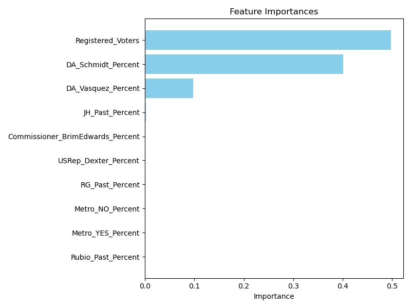

Abstract
This blog post presents a predictive analysis aimed at forecasting precinct-level vote totals in the upcoming Portland mayoral race between Rene Gonzalez and Carmen Rubio. Utilizing historical electoral data and advanced machine learning techniques—specifically, a Gradient Boosting Regressor—we develop a model to predict voter turnout and candidate support. The analysis provides insights into the factors influencing electoral behavior and offers detailed interpretations of the model's predictions.
1. Introduction
Accurate forecasting of electoral outcomes at the precinct level is invaluable for campaign strategists, political analysts, and policymakers. It enables targeted campaigning, efficient resource allocation, and a deeper understanding of voter behavior patterns. This study focuses on the upcoming Portland mayoral election, featuring candidates Rene Gonzalez and Carmen Rubio. By leveraging historical election data and sophisticated machine learning models, we aim to predict voter turnout and candidate support at a granular precinct level.
2. Data Sources
Three primary datasets were utilized in this analysis:
- 2022 Rene Gonzalez vs. Jo Ann Hardesty Election Data: Contains precinct-level voting results from the previous mayoral race.
- 2020 Carmen Rubio Election Data: Provides precinct-level data from Carmen Rubio's previous election.
- Additional Electoral Data: Includes results from other relevant races and measures (e.g., District Attorney race, Metro measure voting percentages).
3. Methodology
3.1 Data Preprocessing
Data preprocessing involved loading and merging datasets, handling missing values, and converting data types. Relevant columns were selected and renamed, and datasets were merged on the Precinct column. Missing numerical values were filled with zeros, and all numerical features were converted to appropriate data types.
3.2 Feature Engineering
New features were created to enhance the model's predictive capabilities, including Registered_Voters and past performance percentages for each candidate and measure.
3.3 Model Training and Evaluation
The model training process involved feature scaling using StandardScaler, splitting data into training and testing sets (80/20 split), and employing a Gradient Boosting Regressor. The model was evaluated using Mean Squared Error (MSE) and R-squared metrics, with cross-validation performed for robustness.
4. Results
4.1 Model Performance
- Mean Squared Error (MSE): 225,813.56
- R-squared (R²): 0.85
- Cross-Validated R² Score: Average of 0.82 across five folds
4.2 Feature Importance
The analysis revealed that Registered_Voters was the most significant predictor of total votes, followed by DA_Schmidt_Percent. Other influential features included past vote percentages for candidates and measures.
Feature Importance Plot
4.3 Precinct-Level Predictions
The following table displays the forecasted results. This data is generated by the predictive model and can be found in media/election_forecast_detailed.csv.
| Precinct | Registered Voters | Predicted Total Votes | Carmen Votes | Rene Votes | SHAP Values | Interpretation |
|---|
4.4 SHAP Value Analysis
SHAP values were used to understand feature contributions at the precinct level, revealing that predictions were often influenced by DA_Schmidt_Percent and Registered_Voters.
SHAP Summary Plot

5. Interpretation
5.1 Key Findings
- Influence of Registered Voters: Primary driver of total votes.
- Impact of Past Support for Mike Schmidt: Correlation with higher voter turnout.
- Candidate-Specific Insights: Carmen Rubio's past performance is a strong indicator of future support.
5.2 Implications for Campaign Strategies
These insights suggest targeted areas where campaign efforts could be concentrated to maximize voter engagement and support, such as focusing on precincts with high numbers of registered voters and leveraging areas with strong past support for aligned candidates.
6. Conclusion
This analysis provides a comprehensive forecast of precinct-level vote totals for the upcoming Portland mayoral election. By integrating historical election data with advanced machine learning techniques, we have identified key factors influencing voter turnout and candidate support. The findings offer valuable insights for campaign strategists and contribute to a deeper understanding of electoral dynamics in Portland.
A. Code Implementation
The core methodology was implemented in Python using Pandas, Scikit-learn, and SHAP. For a detailed look at the data preprocessing, model training, and feature analysis, the complete source code is available on GitHub.
View Code on GitHub